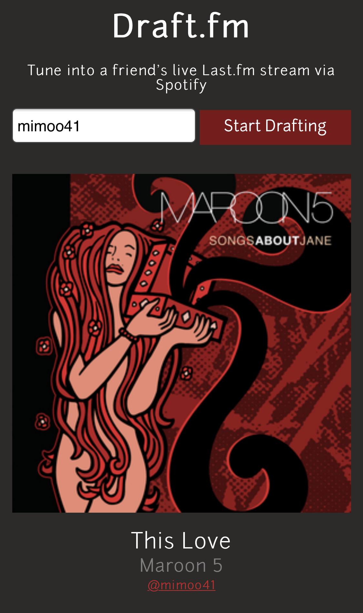

Projects


Queued takes the Last.fm experience that many already love and adds a social component to it. What are your friends listening to at the moment? Want to share your favorite song with them? How about quickly view their Last.fm stats, such as favorite arist of all time, or most played song this week? Queued has you covered. This project came to life as a result of Spotify desktop being blocked by my previous employer. Several of my coworkers and I loved to share music with each other, but the Spotify friend feed was unavailable, so we needed a way to easily see what everyone was listening to. Queued solved this problem for all of us.
Draft.fm
I created Draft.fm with the intention of learning Javascript, HTML, and CSS while trying to bring a longtime idea of mine to life. The premise is simple. If your friend is listening to music, you can listen with them in (almost) real time! Similar to Queued, this project works with Spotify and Last.fm endpoints to pull current listening data and update users' Spotify playback state. Draft.fm supports both mobile and desktop usage, but Spotify premium is needed. I may eventually try to integrate this project into Queued, or vice-versa, once I revisit these in the future. More recently, I added a feature that allows you to quickly create Spotify playlists comprised of your friends' top songs for different lookback periods (all-time, last week, month, year).


Work and Education
SB Actuaries
Current Role
Willis Towers Watson
4 Years of Experience
University of California, Santa Barbara
Actuarial Science, B.S. (2014)
Lund University (Sweden)
Education Abroad Program
I currently work as a Consultant at SB Actuaries. Day-to-day responsibilities include financial analysis, strategic and product development, model construction, project management, and more.
Outside of work, I'm currently working on a web application that can generate playlists using collaborative filtering, as well as offer visualizations of personal listening trends and various other interesting stats.

Contact
Feel free to contact, follow, or connect with me via any of the platforms below.